Chapter 4: After Game Boy (1989–1996)
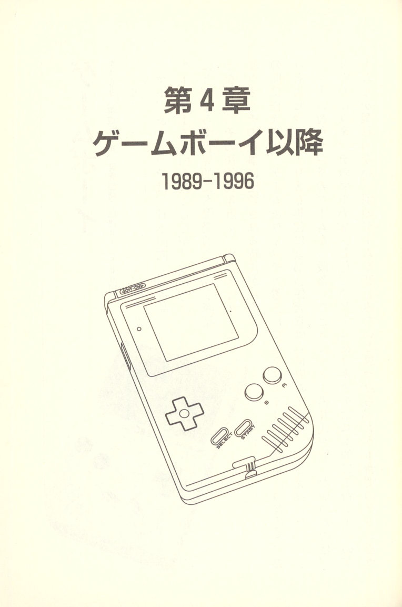
 p.147 1989 (Heisei 1) — Launch price: ¥12,500
p.147 1989 (Heisei 1) — Launch price: ¥12,500
Game Boy
[IMAGE: Photograph of a Nintendo Game Boy handheld console]
Game & Watch not only sparked a handheld game boom in Japan, but went on to become an explosive hit worldwide — not merely a liquid-crystal novelty, but a genuine phenomenon. In its wake, for roughly the next ten years, Yokoi found himself perpetually consumed with Game & Watch work. During that period, he steadily accumulated assets, which he then channeled into developing the Famicom — and so Game & Watch gave way to a new era. In the 1980s, Nintendo in Kyoto transformed into "Nintendo of the World." When the Game & Watch boom began to subside, it was Yokoi who stepped up next to develop one game after another into hits. Game & Watch is fundamentally a standalone device — each unit plays only one game. Its multi-software format is the Game Boy. If you want to enjoy a different game, you simply need another Game & Watch unit; but if you want to enjoy a different game on Game Boy, you just need ano
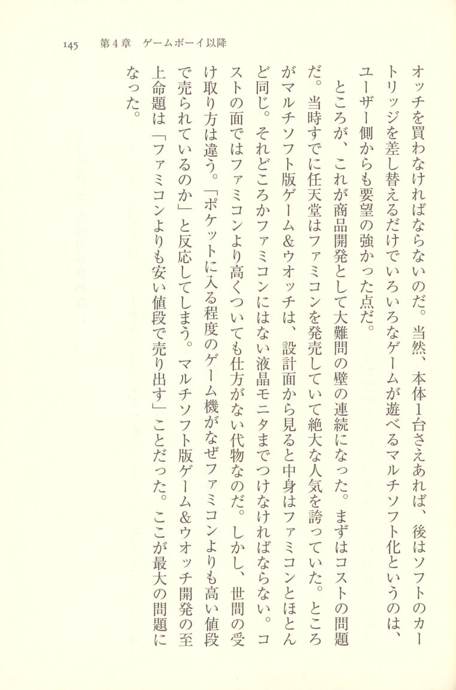
At the time, however, Nintendo had already launched the Famicom and it was enjoying enormous popularity. Looking at it from the design perspective, the internals were almost identical to the Famicom. But the multi-software version of Game & Watch uses a liquid-crystal monitor — it can't hold a candle to the Famicom. Yet on the pocket-gaming front, it costs more than the Famicom. This is precisely why the multi-software version of Game & Watch was never developed for the Famicom. The world simply wouldn't accept it at a price higher than the Famicom. However, selling it at a lower price than the Famicom became the ultimate challenge for its development. This was the biggest problem — "Would it sell as a Famicom alternative?" — and it triggered the response: "Sell the multi-software version of Game & Watch at a lower price than the Famicom." This became the supreme development challenge.
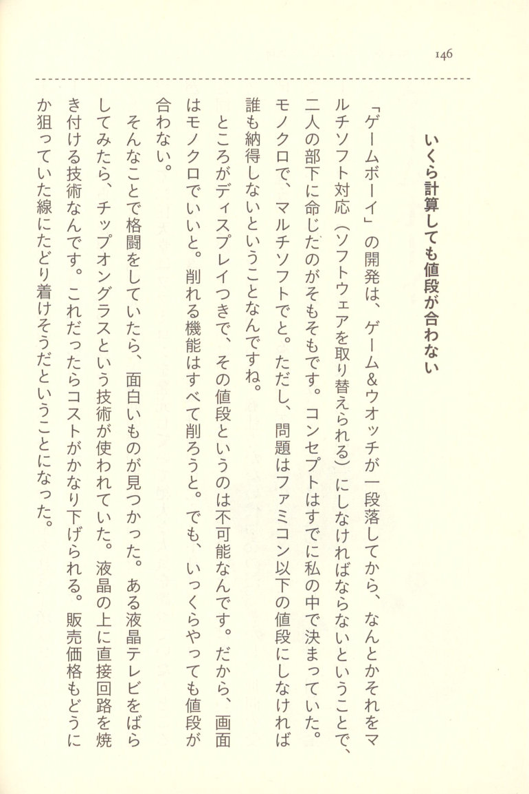
Once Game & Watch dropped down a tier to become the Game Boy — making it multi-software capable (meaning you could swap out the software) — both of those things had already been decided in my mind. The concept had to be priced below the Famicom. The problem was that it needed to be below the Famicom's price, and it was something nobody could agree on. "That's just the way it is," you might say. But the multi-software approach itself was something nobody could accept — that's what it amounted to.
The display is monochrome. And it's multi-software. Yet the price is impossible to achieve. So no matter how cheap you make it, the screen is monochrome and that's a deal-breaker, which means all the features that can be cut should be cut. But it has to be a monochrome display — that's non-negotiable.
With that in mind, we started competing on chip-on-glass technology. That turned out to be interesting — a technique had been found where you could burn circuits directly onto a liquid-crystal screen. This was a technology called chip-on-glass. Using this brought costs down considerably. And once we had that, it looked like we could finally reach the price we'd been targeting all along.
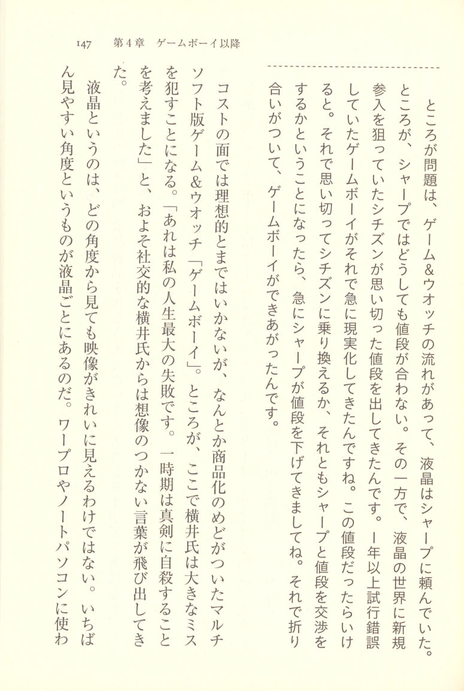
On the software side, things were far from ideal — we somehow managed to get to the point of commercializing the multi-software Game & Watch, the "Game Boy," as it were. But at one point, Yokoi himself committed a grave mistake. "That was the biggest blunder of my life," and "It's the kind of thing that, socially speaking, Yokoi couldn't have even imagined saying" — those words began flying around at the time, seriously, to the point of him wanting to disappear.
The thing about liquid crystal displays is that they show beautiful images from any angle — though that's not actually true. LCD screens don't look perfectly clear from every direction. Take word processors and laptop computers, for instance — they're used
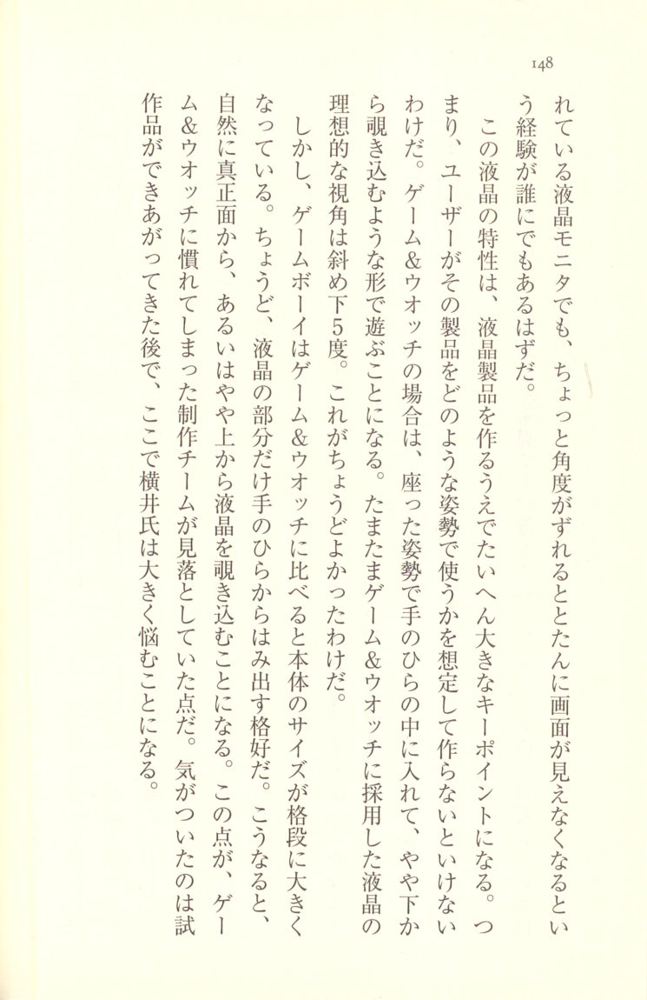
Given that, the question for whoever wants to build an LCD product is: at what angle do you expect the user to hold it? In the case of Game & Watch, since you happened to be holding it in the palm of your hand, the display was made to look best from a slightly downward angle — and as it turned out, that worked just fine. That's why the liquid crystal used in Game & Watch was adopted in that form.
The ideal viewing angle for playing a game is about five degrees below horizontal. Compare that to Game & Watch, and the Game Boy's body is considerably larger. What this means is that when you look at only the LCD portion of the Game Boy, you end up peering at it from slightly above. This became a significant problem for the Game Boy development team. By the time they realized it, the trial production phase was already underway, and Yokoi himself found himself deeply troubled.
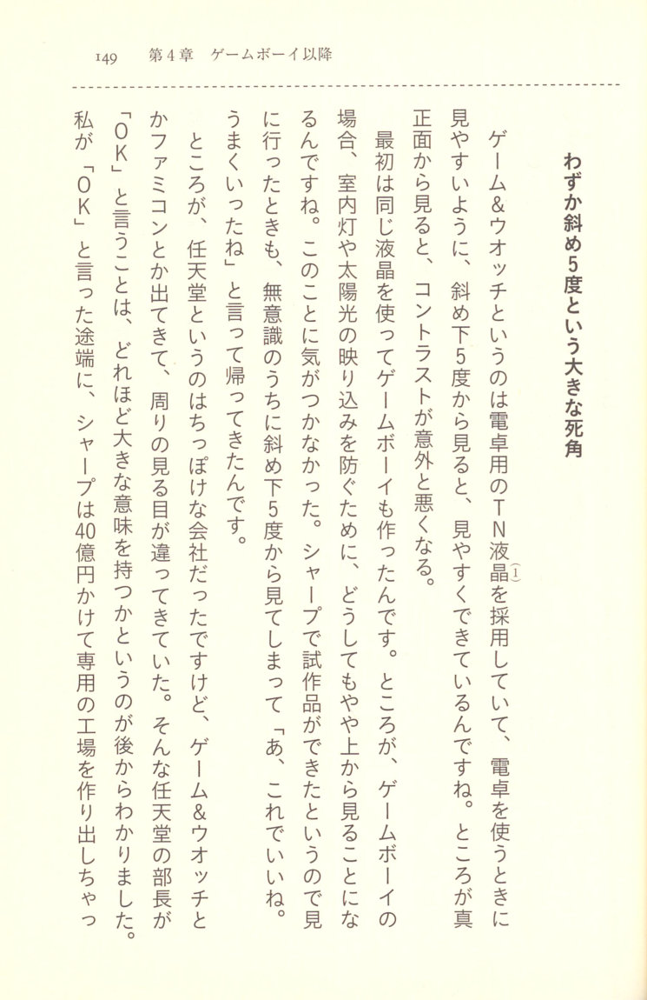
But then, although it worked fine at the time, we somehow drifted back to viewing it at five degrees below horizontal without really noticing. Nintendo is a pretty small company, you know. So the division heads at Nintendo came along with Game & Watch and said things like, "OK" — and by "OK," they meant it in the biggest possible sense. After that, it turned out that Sharp had spent four billion yen building a dedicated factory, and the moment I said "OK" —
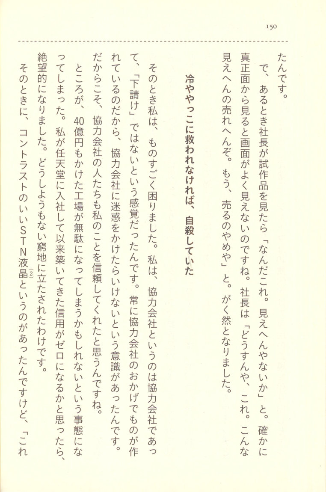
If it hadn't been saved at that moment, I would have killed myself
At that point I was in terrible trouble. I had a very strong sense that I couldn't let our partner companies down. It's because of our partners that things get made, after all — I was always conscious of that. So I couldn't just tell them, "Forget it," just like that. I felt I couldn't betray the trust they had placed in me.
But the thing was, Sharp had already built a dedicated factory with four billion yen of investment, and the credit I had built up since joining Nintendo was on the verge of going to zero — or so I thought. At that point, I found myself stranded in the middle of nowhere with an STN liquid crystal display that had terrible contrast and no one to turn to. And then — "this
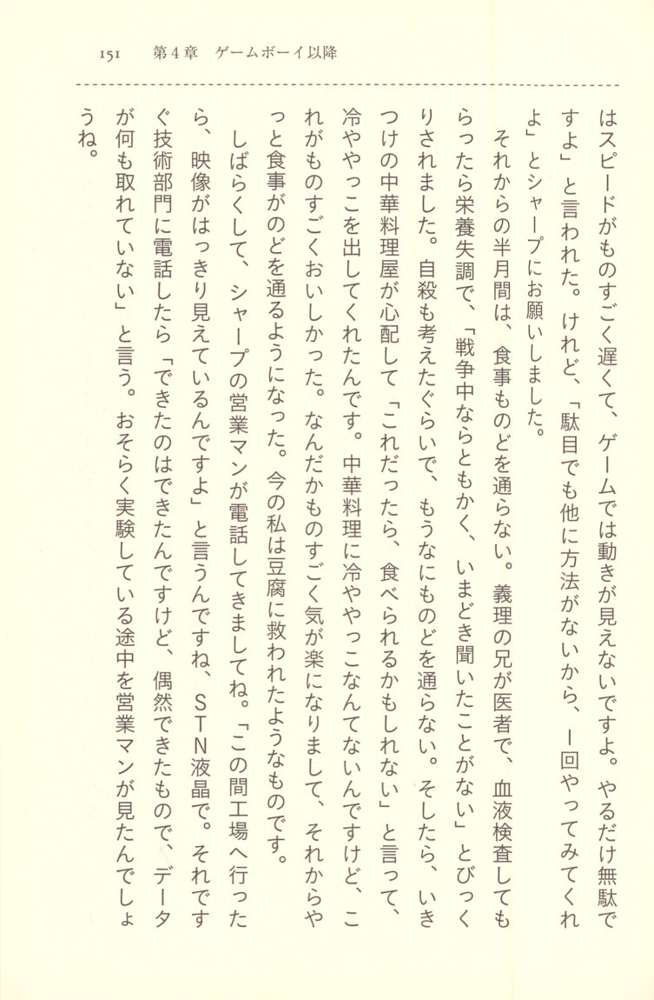
During that time I went to the Sharp factory. After that, the Chinese restaurant there was incredibly kind to me — the food was delicious, and somehow it lifted my spirits enormously. Something about the Chinese food there, I don't know what it was, but it saved me completely. And then a Sharp salesman called and said, "We've managed it, you know. It's the STN liquid crystal. Data from that — well, it turned out we accidentally got it working, but the technical team, when I called them, said 'We got it working but the data's probably been taken away somewhere mid-experiment, and a salesman happened to see it, so
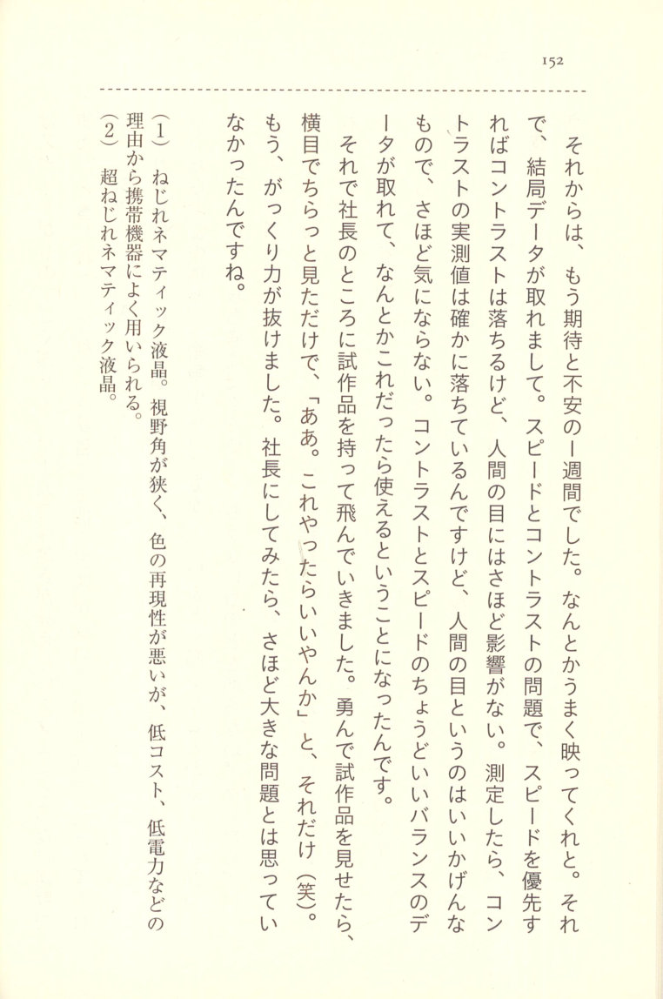
(1) Twisted nematic liquid crystal. Has a narrow viewing angle and poor color reproduction, but low cost, low power consumption, and other reasons make it widely used in portable devices.
(2) Super-twisted nematic liquid crystal.
 p.156 The Game Boy that was thus born went on to become a popular toy over more than a decade, remaining a long-selling dedicated handheld device capable of displaying only monochrome. What makes it unique is that it can only display monochrome. Users strongly requested "give us color," but it could not be done. The reason is that it was the first-generation Game Boy. Nine years after its release, the Game Boy Color appeared — but the cost of making it color was high, and battery life would be shorter. Beyond that, Yokoi himself chose monochrome for reasons deeply rooted in his game philosophy. He never felt enthusiastic about color. In other words, when it comes to games, things like display content, processing speed, color, polygon graphics, and so forth — Yokoi says, "After this, he remarked, 'I don't really feel like making games anymore,' and the reason is that, frankly, he felt that the games of today had exhausted their ideas. Beautiful graphics, sound, the fierce competition among the large-capacity titles currently on the market —
p.156 The Game Boy that was thus born went on to become a popular toy over more than a decade, remaining a long-selling dedicated handheld device capable of displaying only monochrome. What makes it unique is that it can only display monochrome. Users strongly requested "give us color," but it could not be done. The reason is that it was the first-generation Game Boy. Nine years after its release, the Game Boy Color appeared — but the cost of making it color was high, and battery life would be shorter. Beyond that, Yokoi himself chose monochrome for reasons deeply rooted in his game philosophy. He never felt enthusiastic about color. In other words, when it comes to games, things like display content, processing speed, color, polygon graphics, and so forth — Yokoi says, "After this, he remarked, 'I don't really feel like making games anymore,' and the reason is that, frankly, he felt that the games of today had exhausted their ideas. Beautiful graphics, sound, the fierce competition among the large-capacity titles currently on the market —
[IMAGE: Photograph of the Game Boy packaging]
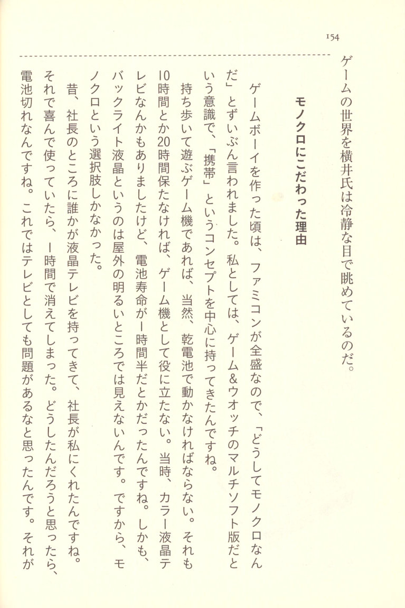
Yokoi's Reasons for Insisting on Monochrome
Around the time the Game Boy was being made, the Famicom was at the height of its popularity, and I kept being asked, "Why monochrome? Why not make a multi-software version of Game & Watch?" Personally, I had always centered my thinking on the concept of "portability." Naturally, it had to run on batteries. And color LCD displays at the time had a battery life of around one and a half hours — barely functional as a game device. On top of that, if you were walking around and playing for ten or even twenty hours, you'd need the battery to last. But color LCD screens couldn't be seen in bright outdoor light. And then there was the backlight issue — backlit LCD screens are fine indoors, but outdoors they're invisible. So color was out of the question.
Back in the day, the only real option was a monochrome LCD. Nobody at the company pushed back on that.
But then the president brought me a color LCD television — he was so pleased about it, gave it to me himself. So I used it, and after an hour it went dead. The battery died. I thought, that's a problem. What was the president thinking? And then I realized — that thing is a television, and even as a television it has issues. That's
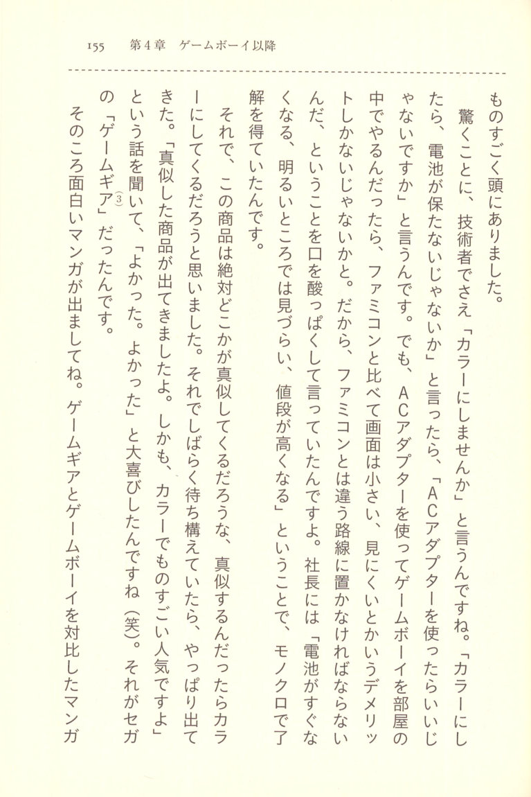
And then, knockoff products started appearing. This product is definitely going to get copied, I thought. And sure enough, knockoffs came out. And on top of that, they were color — and color ones were hugely popular (laughs). They really sold well. When I heard that story, I thought, "Good — that's fine. Good." That was Sega's "Game Gear." And around that time there was a really funny manga — the manga that compared Game Gear and Game Boy — and that was Sega's
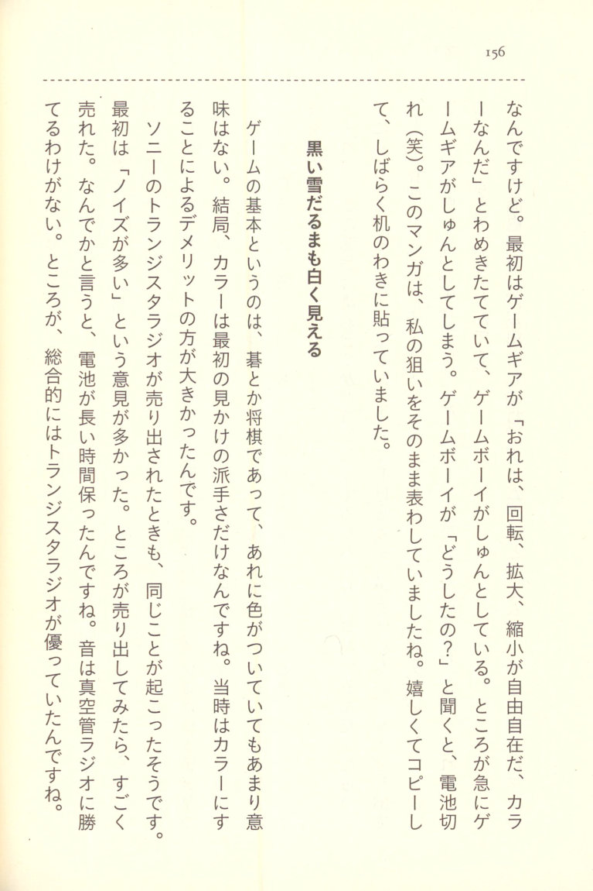
Black snowmen look white too
The basics of gaming are things like Go and shogi — and no matter how much color you add to them, they don't really need it. In the end, color was the biggest drawback at first. And the fact that you can demonstrate it — at the time it was color — that didn't matter much either. The same thing happened when Sony released the transistor radio — when it first came out, it sold really well. But then the same thing happened: Noise was a big problem, and people were saying "Sony has a lot of noise." But the battery lasted a long time, so in the end, the transistor radio won out. The sound was better than vacuum tube radios, you see. But overall, the transistor radio was superior. Though, somehow —
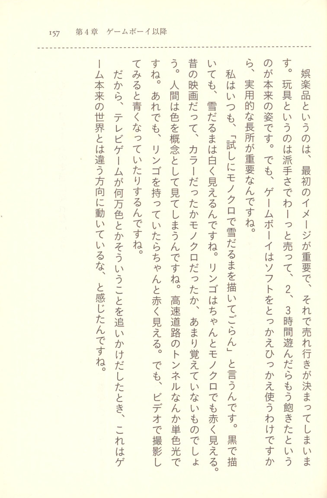
For me, practical strengths are what's most important. "Try drawing it" — even in monochrome, go ahead and draw a snowman. Black snowmen look white too, you see. Apples look properly red even in monochrome. Drawn in black, a highway tunnel — well, you don't really remember what it looks like anyway. But if you film it with video in black and white, it looks single-colored. As for old movies — they were color too, weren't they? People have taken color as a given and stopped really seeing it. Even so, apples do look properly red, and tunnels do look black. But filming with video in monochrome — it all just looks flat.
So when TV games started chasing all these millions of colors and things like that, I felt: this is a game machine moving in a completely different direction from what gaming is really about.
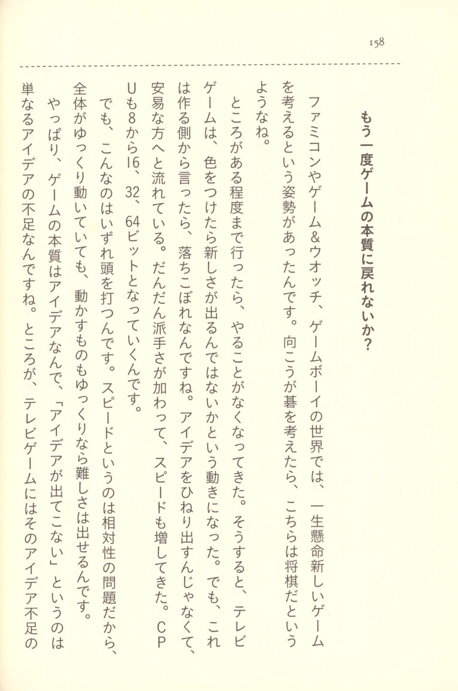
In the world of the Famicom, Game & Watch, and Game Boy, if you think about what lies beyond them, you find yourself thinking: I want to make brand-new games with all my might. If the other side is Go, then our side is shogi — that kind of attitude existed, you see.
The thing is, once you add color, a freshness emerges. But then that freshness fades, and you start thinking it's no good if things don't move. And once things are moving, TV games began to feel stale. So then the idea gets twisted around, and not only the idea but the speed increases too. This whole thing flows toward the easy route, with more and more elaborate effects added in. It keeps escalating — CPU going from 8 to 16, 32, 64 bits. Even as it all moves slowly, hitting dead ends, it still moves slowly. The thing is, "idea" is a matter of relativity, so ideas do emerge. But "ideas aren't coming out" — in TV games, that idea shortage is simply a shortage of ideas.
In the end, games are fundamentally about ideas — so "ideas aren't coming out" in TV games means that idea shortage is nothing more than a shortage of ideas. But then,
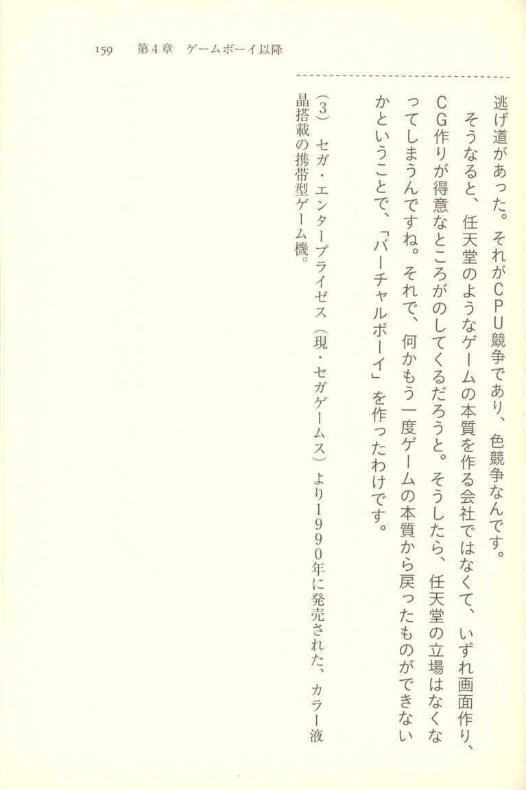
(3) Sega Enterprises (now Sega Games) — a color LCD handheld game console released in 1990.
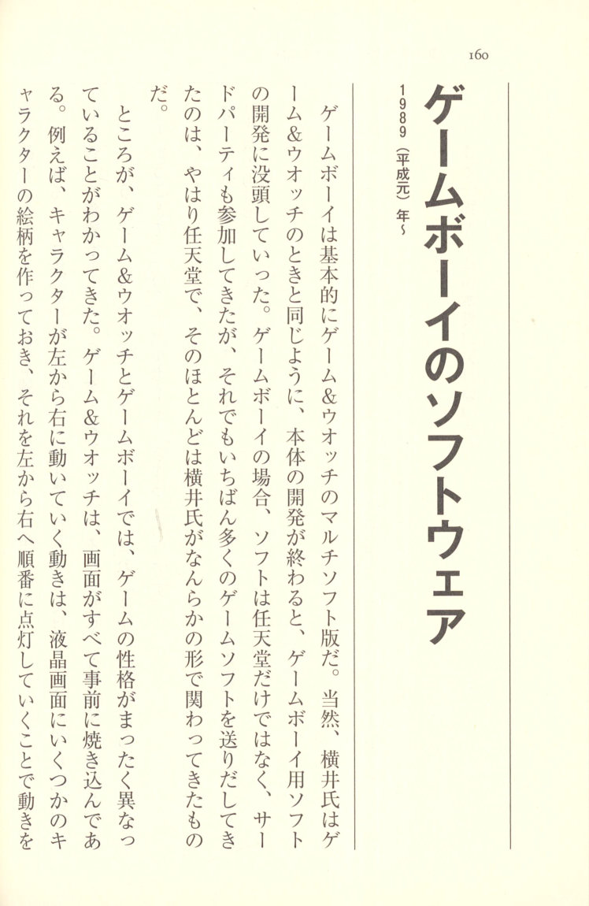
Game Boy Software
The Game Boy is essentially a multi-software version of the Game & Watch. Naturally, once development of the Game Boy hardware was complete, Yokoi threw himself into developing Game Boy software. In the case of the Game Boy, the software was not sent out by Nintendo alone — third parties also got involved, and most of them came to Yokoi in one form or another.
However, it became clear that the Game & Watch and the Game Boy have completely different natures as games. In Game & Watch and Game Boy titles, all the game data is burned into the screen in advance. For example, you draw the character's sprite art, and then animate it by lighting up several of those characters on the LCD screen in sequence from left to right — moving it left to right in that order creates the illusion of movement.
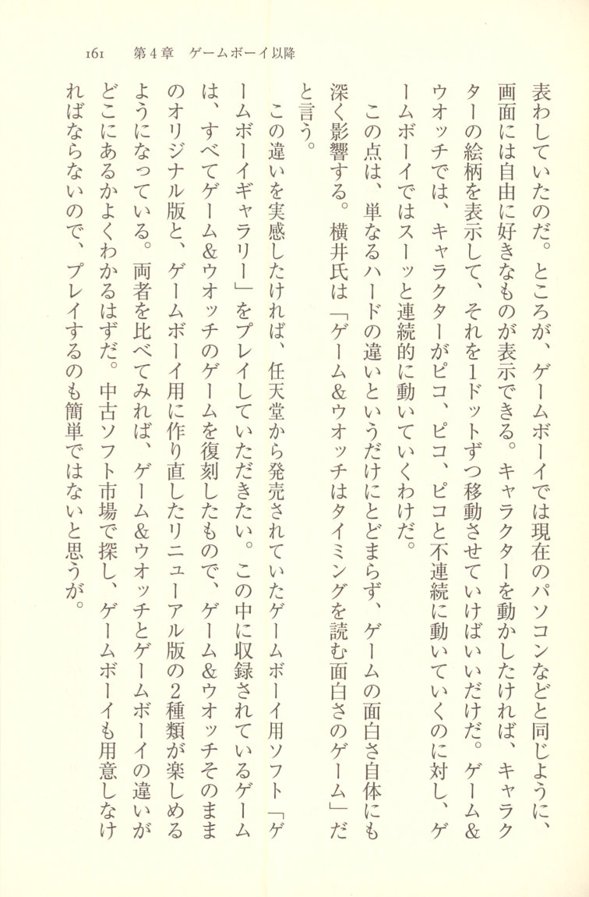
To experience this difference for yourself, I'd encourage you to play the Game Boy software that Nintendo released. Among those titles are the "Game Boy Gallery" games — Nintendo remakes with original Game & Watch versions and Game Boy versions, two varieties you can enjoy. Comparing the two side by side, the difference between Game & Watch and Game Boy becomes immediately clear. You can find them on the used-software market, so I think it's well worth tracking one down — though playing it is by no means simple.
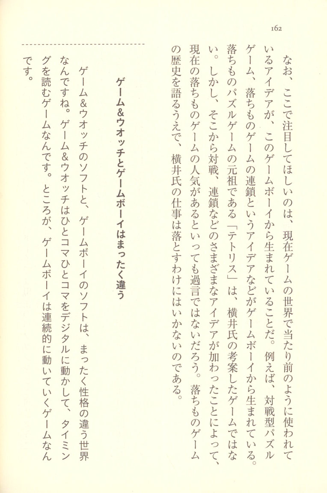
Game & Watch and Game Boy Are Completely Different
Game & Watch software and Game Boy software inhabit entirely different worlds. Game & Watch moves each piece one frame at a time, digitally — it's a timing game, you see. Game & Watch is a game you read frame by frame. The Game Boy, on the other hand, is a game of continuous motion.
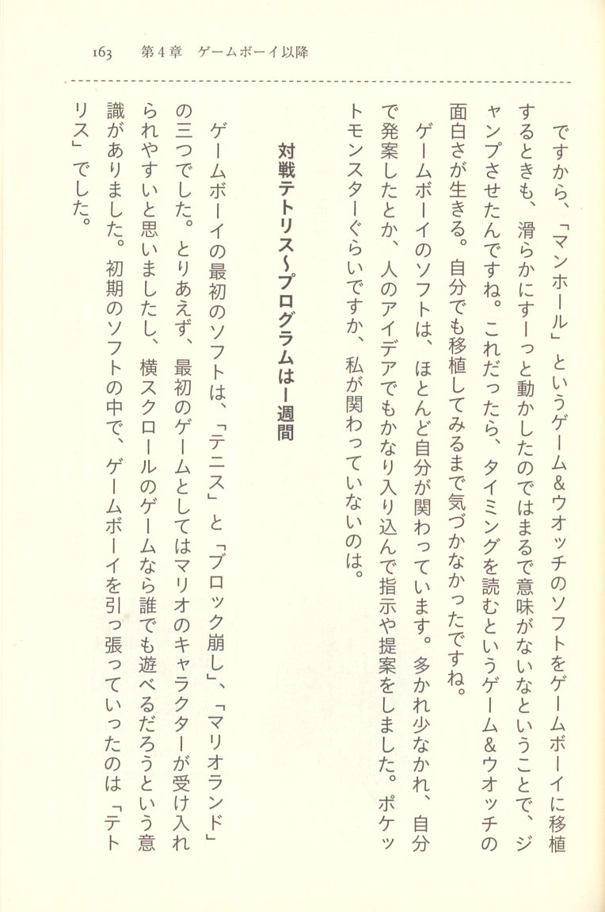
Competitive Tetris — The Program Took One Week
The Game Boy's first software titles were "Tennis," "Block Breaker," and "Mario Land." As for that first game, the Mario character was accepted with the understanding that anyone would play a side-scrolling game featuring Mario — that was the consensus. Among the early software titles, the one that really carried the Game Boy forward was "Tet-
 p.167 ris." By the time we were launching the Game Boy, the Famicom version of Tetris already existed, and we felt dissatisfied that it hadn't been taken up by us — we really wanted it. So I thought, how can we make this work? We asked one of our programmers to do it, and he finished the program in one week. The program itself was simple, you see. And then it was the link cable that brought it to life — that's what made competitive Tetris a hit for the first time. Competitive Tetris, as an idea, had existed before. Simply put, it's a race to clear blocks — but none of our programmers had thought of it. After that, our attack-type competitive game programmers began thinking up attack-style competitive games almost entirely on their own. "Yoshi's Cook-
p.167 ris." By the time we were launching the Game Boy, the Famicom version of Tetris already existed, and we felt dissatisfied that it hadn't been taken up by us — we really wanted it. So I thought, how can we make this work? We asked one of our programmers to do it, and he finished the program in one week. The program itself was simple, you see. And then it was the link cable that brought it to life — that's what made competitive Tetris a hit for the first time. Competitive Tetris, as an idea, had existed before. Simply put, it's a race to clear blocks — but none of our programmers had thought of it. After that, our attack-type competitive game programmers began thinking up attack-style competitive games almost entirely on their own. "Yoshi's Cook-
[IMAGE: Box and link cable set for the Game Boy competitive Tetris communication cable bundle]
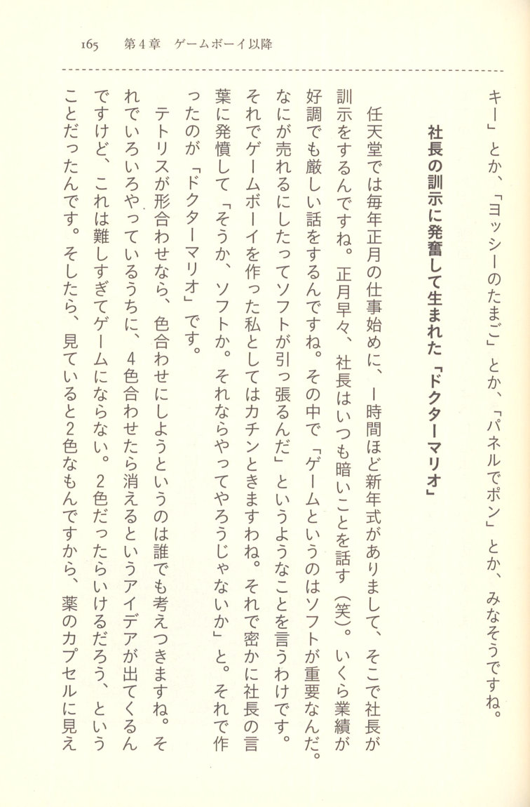
Born from the President's Instructions: "Dr. Mario"
At Nintendo, every year at the start of work in January, there's a New Year's ceremony lasting about an hour, where the president gives a speech. And in it, he always says something along the lines of, "Games — software — are what matter. No matter how good the company's performance is, his instructions on that point are always strict. Among those instructions, what he always stresses is: "Make something that will sell." As the person who made Game Boy software, that really hit home for me. Everything we put out on Game Boy, I felt the pressure — "It has to sell."
So I thought, well, if Tetris can fit together shapes, then anyone could come up with the idea of making colors match. If you can make them disappear in 4 colors, then ideas for 4-color matching will follow naturally. While we were playing around with all sorts of variations, it became too complicated to be a game anymore — it couldn't be done in 4 colors. Since 2 colors would be fine, and since 2 colors made you think of medicine capsules, it started to look like — that's what gave us "Doctor Mario." That's how it was made. But it was too hard, you see. And then, looking at it with 2 colors, the leaves became medicine capsules, and
 p.169 that became the concept of Dr. Mario. In Dr. Mario, when you clear blocks, the blocks above come falling down, and for the first time I realized that triggered chain reactions. So when I saw "Puyo Puyo," I thought it was a clear imitation. That's why when I saw it I said, "That's a blatant ripoff of mine," but apparently when we looked into it later, it seemed that might not have been the case. Though I honestly haven't verified that myself, and the matter isn't entirely settled. There were also stories going around at the time that "they copied me," but as for the truth — I haven't investigated it.
p.169 that became the concept of Dr. Mario. In Dr. Mario, when you clear blocks, the blocks above come falling down, and for the first time I realized that triggered chain reactions. So when I saw "Puyo Puyo," I thought it was a clear imitation. That's why when I saw it I said, "That's a blatant ripoff of mine," but apparently when we looked into it later, it seemed that might not have been the case. Though I honestly haven't verified that myself, and the matter isn't entirely settled. There were also stories going around at the time that "they copied me," but as for the truth — I haven't investigated it.
[IMAGE: Box art for Dr. Mario (Famicom version shown), featuring Mario dressed as a doctor surrounded by capsules and virus characters]
Dropped Pieces Make It Interesting — "Yoshi's Egg"
The Yoshi series was developed as both a Game Boy and a Famicom software title simultaneously. The idea was to avoid using color in the screen layout so that it could also be used on Game Boy. That's why it was designed to work on the Famicom as well.
 p.170 "Yoshi's Egg" was originally conceived as a game where you flip Yoshi's row upside down — that was the initial proposal brought to me. But the processing would drop frames on the CPU, and the screen redraws were just too slow to display properly. The movement inside was somehow neither interesting nor uninteresting. In short, the screen redraw was a fatal flaw for the software. So the game's essence — that "eggs should be born from inside, making it interesting" — became the concept, and "Yoshi's Egg" was decided as the name.
p.170 "Yoshi's Egg" was originally conceived as a game where you flip Yoshi's row upside down — that was the initial proposal brought to me. But the processing would drop frames on the CPU, and the screen redraws were just too slow to display properly. The movement inside was somehow neither interesting nor uninteresting. In short, the screen redraw was a fatal flaw for the software. So the game's essence — that "eggs should be born from inside, making it interesting" — became the concept, and "Yoshi's Egg" was decided as the name.
In the process of deciding what to call it, I came up with the name "Yoshi's Egg," and when I presented it to the company president, he said, "What? 'Yoshi's Egg'? That's a surprisingly fun name," and was impressed. But later he came around and said, "It's a good name, isn't it," and seemed satisfied.
[IMAGE: Box art for Yoshi's Egg (Famicom version shown), featuring Yoshi on a white background with the title in Japanese]
① The mega-hit series of falling-piece puzzle games, "Puyo Puyo." Released by Compile in 1991—
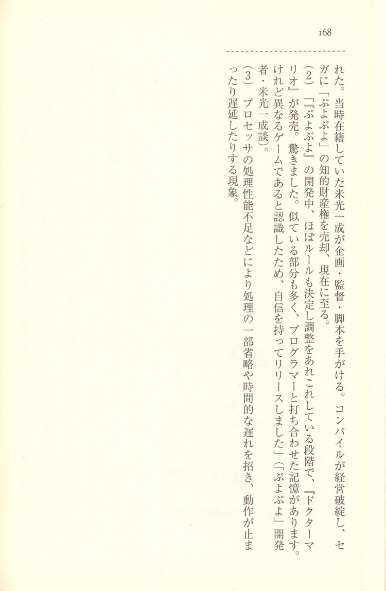
② The intellectual property rights to "Puyo Puyo" were sold and currently belong to Sega.
③ A phenomenon in which insufficient CPU processing power causes parts of the processing to be skipped or temporarily delayed, resulting in the action freezing or movement becoming choppy.
 p.172 Virtual Boy
p.172 Virtual Boy
1995 (Heisei 7) — Release price: ¥15,000
[IMAGE: The Virtual Boy console mounted on its stand with the controller attached by a cable]
According to Yokoi, he had long been thinking about leaving Nintendo. It wasn't that he had any particular dissatisfaction with Nintendo as a company — it was simply that he was already past fifty, and he wanted to enjoy the rest of his life doing only the work he truly loved, and to spend his remaining years in leisure. He said he had felt that way for some time. Meanwhile, the gaming world of that era was naturally dominated by the CPU wars — the battle over graphics performance. Nintendo, too, was being swept up in it, with the Super Famicom, the Nintendo 64, and their rivalries all drawing everyone into that whirlpool. Or rather, Nintendo was at the very center of that whirlpool, and
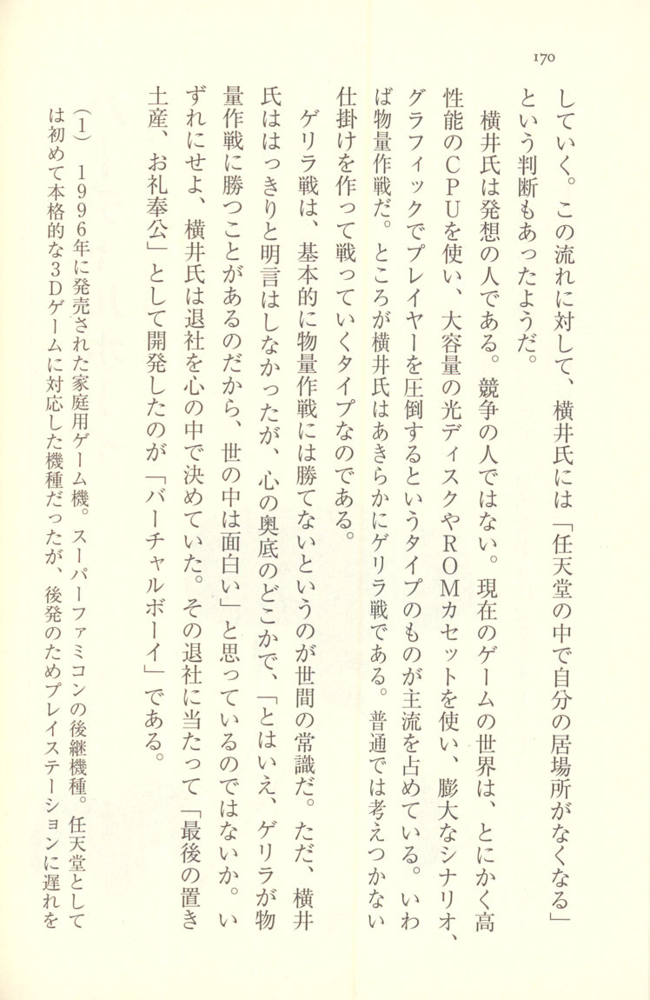
Such was his thinking. Against this tide, Yokoi was not a man who competed. The current state of gaming was dominated by pushing graphics performance — using high-performance CPUs to overwhelm players with large-capacity discs and ROM cartridges. The prevailing scenario was one of massive scale. What Yokoi clearly belonged to was what one might call the guerrilla type — a type that simply doesn't fit the mainstream today.
Guerrilla warfare is, at its core, about winning through attrition. But Yokoi was plainly not the attrition type. Guerrilla warfare, however, knows deep in its heart that something in the world is interesting — and it was on that conviction that Yokoi had built his career. To say "the world is interesting" is common knowledge, of course. But Yokoi, as a guerrilla fighter, had clearly made up his mind: winning isn't everything. So then, wasn't his departure from the company his final act of positioning — his "last stand"?
That the product he poured his heart into as he left Nintendo was the Virtual Boy goes without saying.
(1) A home gaming console released in 1996. It was Nintendo's successor to the Super Famicom — a next-generation PlayStation-rival system — and the first truly full-scale 3D game machine Nintendo had developed, though as a latecomer it trailed the PlayStation.
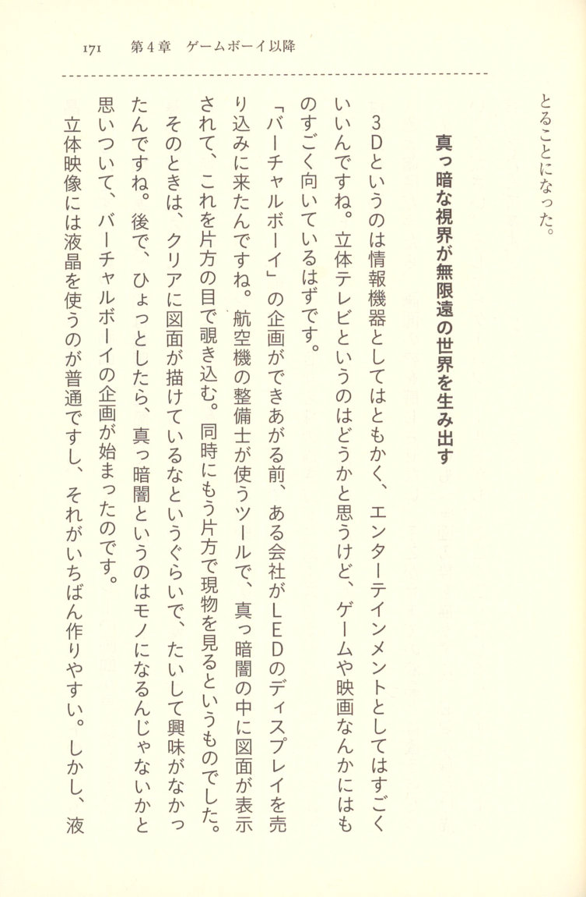
3D, as a concept for information devices, goes without saying — but as entertainment, for games and films, it's tremendous. As for stereoscopic television, I'm not sure how that would work, but it should be fantastic. The idea for the Virtual Boy came about before a certain company began selling LED displays — displays that show images in complete darkness. At the same time, a tool used by aircraft mechanics lets you look at diagrams with one eye while simultaneously viewing the actual object with the other. Being able to see a diagram clearly overlaid in the darkness was, for me, quite something.
At that point, to be honest, I wasn't particularly interested in making it into a product. But then, after a while, the Virtual Boy project got started. When it comes to 3D imagery, using liquid crystal is the standard approach — it's the easiest to build, after all. However, liquid
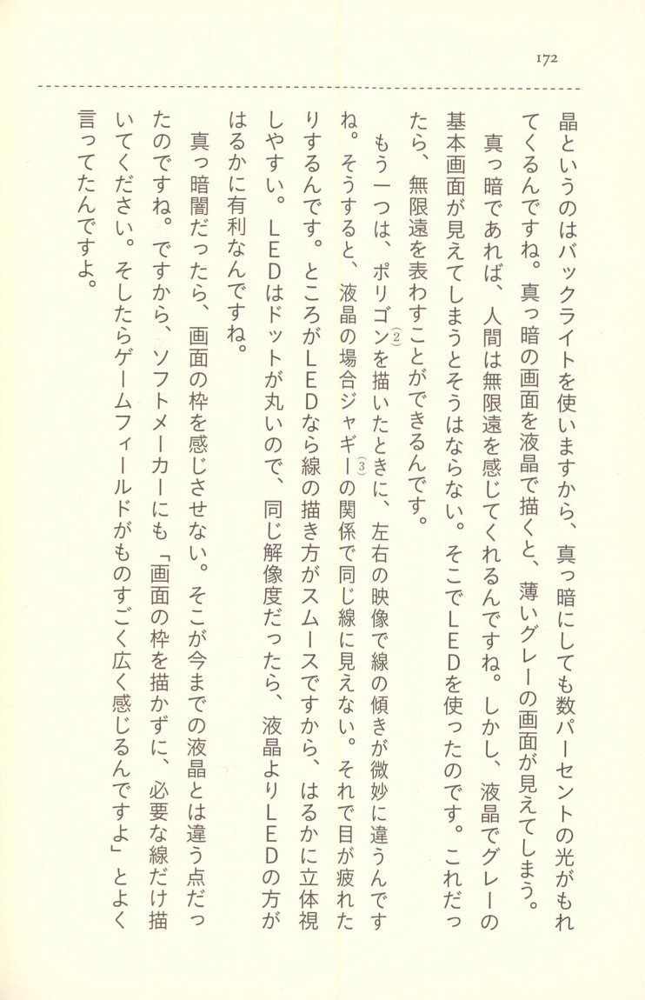
There's another point as well. When you draw polygons with liquid crystal and there's slight jagginess, the slightly different angles of the lines in the left and right images make your eyes tire very quickly. It becomes hard to perceive depth. With LED, on the other hand, lines are drawn smoothly, so the eyes find it far easier to achieve stereoscopic vision. And since LEDs draw in dots that are round, you don't feel the border of the screen. This is where LED was different from conventional liquid crystal — it was truly in the dark. So software developers also started saying, "We can draw without a screen border — we can draw only the lines we need — the screen feels incredibly wide." That's what they told us.
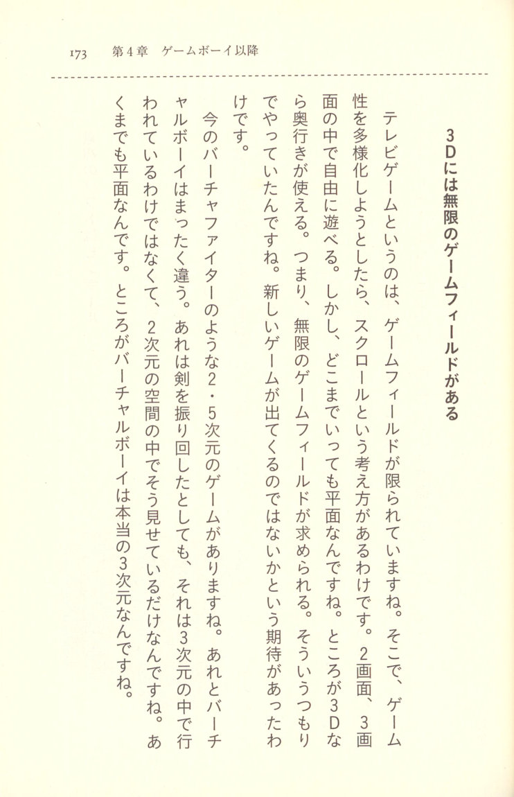
Television games, you see, have a limited game field. So if you want to diversify the game — if you want to play freely within the game field — there's the concept of scrolling. But no matter how far you scroll, the field is always flat. Two screens, three screens — the field demanded is always flat. And yet, with 3D, you can move freely through that field in the depth direction. In other words, we had great expectations that new games would emerge — games without a limited game field. That's what we believed.
Now, Virtual Fighter is a 2.5-dimensional game, isn't it? That and Virtual Boy are completely different. That game swings a sword and makes it look three-dimensional, but it's performing within 2D space — it's only showing you 3D. Virtual Boy, on the other hand, is true 3D. Even so, it remains flat to this day. But Virtual Boy
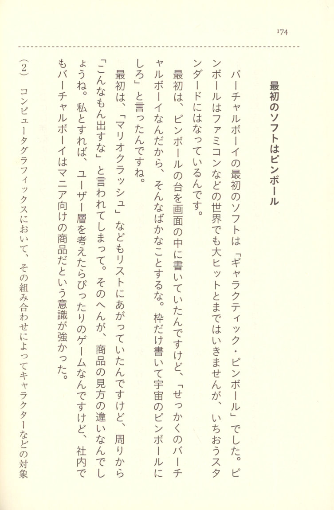
Virtual Boy's first software was "Galactic Pinball." Virtual Boy didn't become the massive hit it was in other parts of the world — not reaching Famicom-level success — but it was at least a standard. The first software was pinball, you see. We had written it inside the screen as "the universe's pinball," but it only showed the frame — making it some kind of ridiculous pinball set in space. "At least give us a proper Virtual Boy game," people said.
The very first title was "Mario Clash." Things like that made it onto the list, but people around me were saying, "Put out something like this, put out something like that." The way they looked at the product was just completely different inside the company. As far as I was concerned, if you thought about the target audience, these were perfectly appropriate games — but internally I kept being told, "You call this a game?"
(2) In computer graphics, Virtual Boy was aimed at enthusiasts, and the awareness that the combination of characters and other such elements was what made it work was strong.
 p.178 (3) Refers to expressing three-dimensional objects as triangles, quadrilaterals, and the like. Refers to the jagged, staircase-like effect that appears along the outlines of shapes.
p.178 (3) Refers to expressing three-dimensional objects as triangles, quadrilaterals, and the like. Refers to the jagged, staircase-like effect that appears along the outlines of shapes.
As is well known, Virtual Boy ended in failure as a product. The market, having been taken over by enthusiasts, was simply too manic. Yokoi's vision, however, was different from theirs — it was a challenge to bring the world of gaming back to square one, away from a product aimed purely at enthusiasts, toward something for first-time players who weren't yet familiar with games. Virtual Boy was not aimed at enthusiasts; it targeted people who found games a way to kill time. As the saying goes, games today have become extraordinarily complex, demanding that players master highly advanced techniques. Games certainly receive high praise from children and game enthusiasts — but the truth of the matter is that everyone else simply doesn't engage with them at all.
[IMAGE: Photograph of the Virtual Boy packaging box]
バーチャルボーイのパッケージ — Virtual Boy packaging
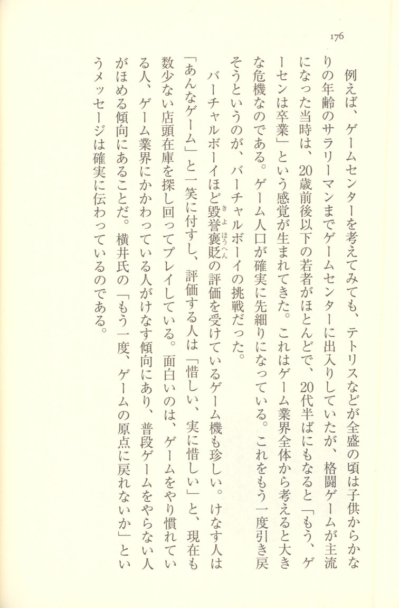
So when Virtual Boy proceeded to receive a drubbing of critical evaluation from the game press, even the arcades — which had staked out their own niche — showed it little mercy. The people who evaluate games in those pages tend to say things like, "What a shame — truly a shame," while those who actually play games today are people who have grown accustomed to playing ordinary games; people who are not yet accustomed to them have a tendency to never set foot in a game shop at all. The game industry itself has a tendency to get wrapped up in this. Yokoi's message — "Once more, back to square one with games" — is surely getting through. It is, in fact, getting through.
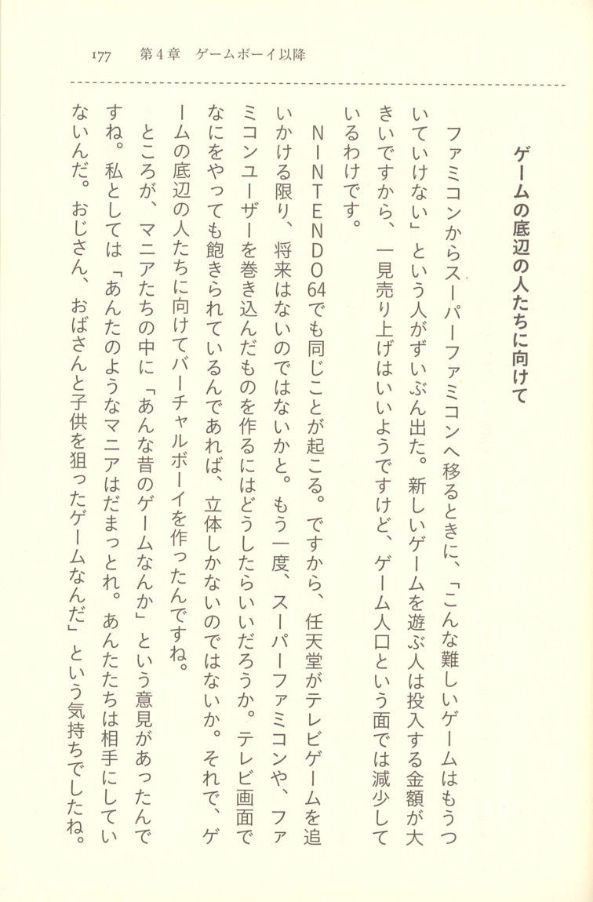
When moving from the Famicom to the Super Famicom, the message was, "Games this difficult are no good anymore." New games came out in large numbers, so sales figures looked fine on the surface — but the amount of money that game-playing people were willing to invest was shrinking, and so the game population itself was in decline.
The same thing is happening with the Nintendo 64. As long as Nintendo keeps chasing television games — the Famicom, the Super Famicom, the television screen — I wonder if there's really no other way. Once more, wouldn't it be good to pull casual players back in? And to do that, wouldn't you need to make something three-dimensional? A television screen means that, no matter what you put on it, people are going to get bored sooner or later. So for games aimed at the casual end of the market, you need to produce something that, even if it bores the hardcore player, will still draw in the ordinary person. The trouble is that among the hardcore crowd there are people with opinions like, "Games like that are ancient history," and those people simply close their minds to it. Personally speaking, I think we should be targeting people like grandmas and grandpas, uncles and aunties, and children — that's the game we need. People who think that way tend to wash their hands of it, saying, "Oh, he's just that kind of person."
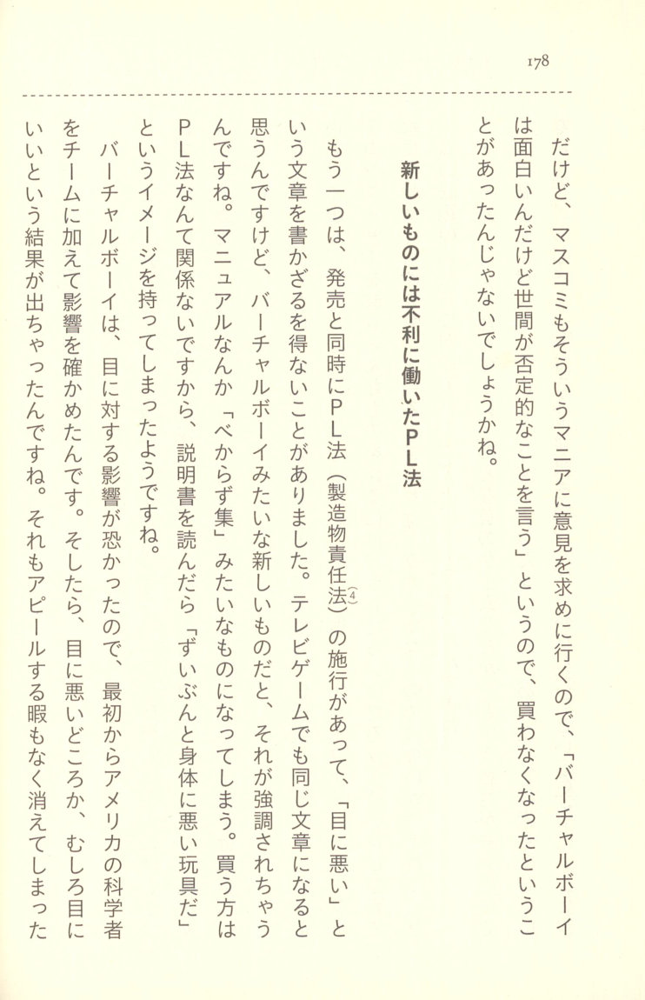
The Product Liability Law that worked against new things
There's one more thing: around the time of its launch, the Product Liability Law [製造物責任法] came into effect, and I found myself obliged to include a sentence I hadn't planned to write. With TV games it's the same — once you write something like "harmful to the eyes," that phrase gets emphasized, and it ends up becoming a new kind of thing like Virtual Boy, something you just have to say: "Buy it." People who buy it think, "Oh, so it's a bad toy." With the PL Law, there's no getting around it, so manuals end up saying things like "Read the instructions" or "Bad for your body" — that kind of language. Virtual Boy was something genuinely new, and its image suffered for that.
So it was frightening how much it affected people's eyes, and from the start even American scientists said it was, if anything, good for the eyes rather than bad. When we added Virtual Boy to the team to verify its effect on the eyes, the results came back positive — and even as we were appealing that, it vanished from shelves almost overnight.
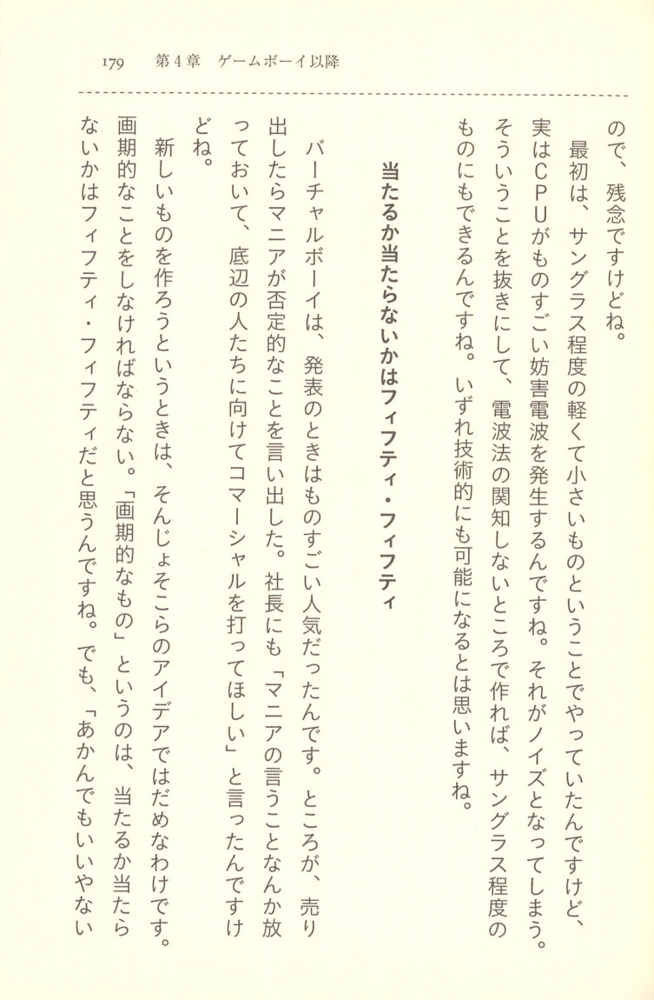
Whether it hits or misses is fifty-fifty
Virtual Boy was enormously popular at the time of its announcement. But then, when it went on sale, enthusiasts started putting out all kinds of negative opinions. Even the company president was saying things like "just what the enthusiasts say" — and yet they still wanted us to run commercials targeting the general public. When you're trying to create something new, "new" on its own isn't enough. The idea has to be a hit — whether it hits or misses is fifty-fifty. I think something epoch-making is epoch-making precisely because it doesn't always land. But still, "it didn't work out" is no good either, is it?
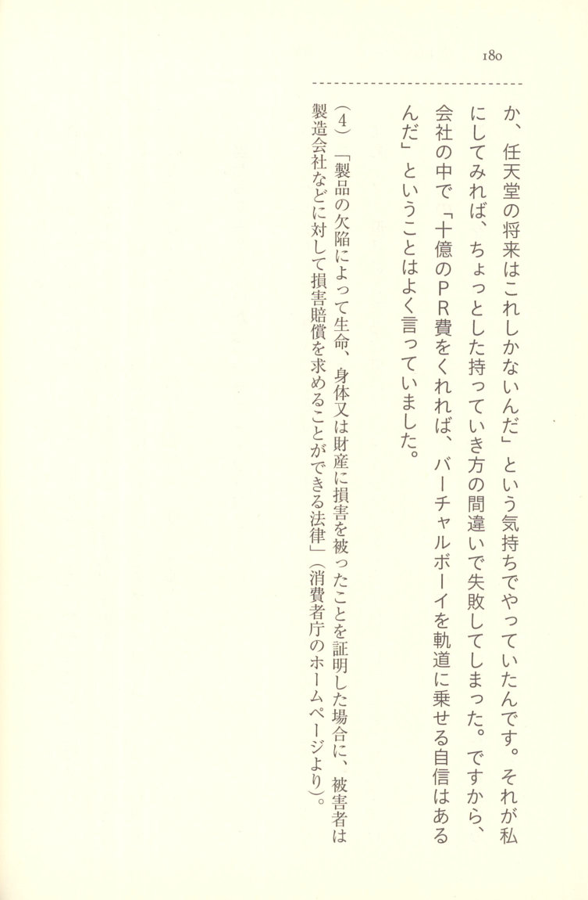
(4) A law that allows victims, if they can prove they suffered loss of life, bodily injury, or property damage due to a product defect, to seek compensation from the manufacturer or other parties. (From the Consumer Affairs Agency website.)
 p.184 [IMAGE: Game Boy Pocket handheld console, shown from the front, displaying the screen, d-pad, A and B buttons, and SELECT/START buttons]
p.184 [IMAGE: Game Boy Pocket handheld console, shown from the front, displaying the screen, d-pad, A and B buttons, and SELECT/START buttons]
Game Boy Pocket
1996 (Heisei 8) — Price at launch: ¥6,800
Yokoi intended to leave Nintendo after Virtual Boy. However, Virtual Boy ended up being a commercial failure, and he found himself having no choice but to postpone his plans. This is where Yokoi's complicated feelings toward Nintendo become apparent. He had planned to leave the company on his own terms, at a time of his choosing, and carry out his life's plans at a comfortable pace. He wanted an environment where he could work freely, guided by his own judgment. But, as he says, leaving the company is something that is not so easy to do straightforwardly. He had already passed the age of fifty, and the story of his life up until the point of leaving was not something the world would look upon with simple honesty, he felt.
Originally, Yokoi had wanted to be able to look back on things with a clear conscience. However, because Nintendo had grown dissatisfied with him for leaving — or so it was widely assumed — and because he bore responsibility for Virtual Boy, it can easily be imagined that he was pointed at by others even as he resigned.
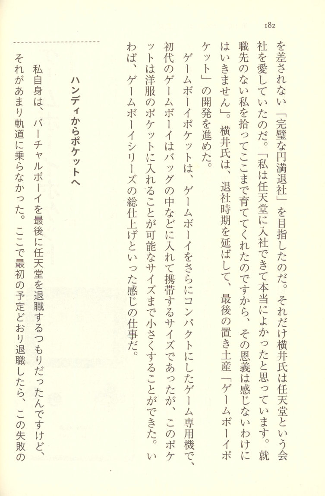
The Game Boy Pocket took the Game Boy, a device designed exclusively for gaming, and made it even more compact. This pocket was able to fit inside the pockets of clothing and the like — making it small enough to carry around — and in that sense it felt like the culmination of the entire Game Boy series.
From the Handy to the Pocket
I myself had intended to leave Nintendo after Virtual Boy, and when I did resign as planned, this failure
 p.186 weighed on me and I felt I had to take responsibility. The world would see it that way too. So, having been given a certain amount of leeway, I developed the Game Boy Pocket as a kind of parting gift before leaving Nintendo — something I could offer up as a final product.
p.186 weighed on me and I felt I had to take responsibility. The world would see it that way too. So, having been given a certain amount of leeway, I developed the Game Boy Pocket as a kind of parting gift before leaving Nintendo — something I could offer up as a final product.
The original Game Boy already had plenty of room to spare, you see — parts added for electromagnetic interference shielding, and so on, making the size quite large. In practice, though, none of that turned out to be strictly necessary. For example, manganese batteries had been the assumed power source at first, but alkaline batteries became the mainstream. And since AA batteries were now being used, the battery capacity doubled, meaning you could get the same battery life in something even smaller. So couldn't we make it smaller? That was the idea. Battery life with AA batteries is ten hours — that was our target.
Now, the original Game Boy, for all sorts of reasons at the time, ended up growing quite large. So it could be said that the Handy size became bigger than it needed to be. That's why, even though calling it pocket-sized might be a stretch, there was a sense that it could fit in a pocket.
[IMAGE: Two Game Boys side by side — the original Game Boy on the left, and the Game Boy Pocket on the right]
*Left: Game Boy; Right: Game Boy Pocket*
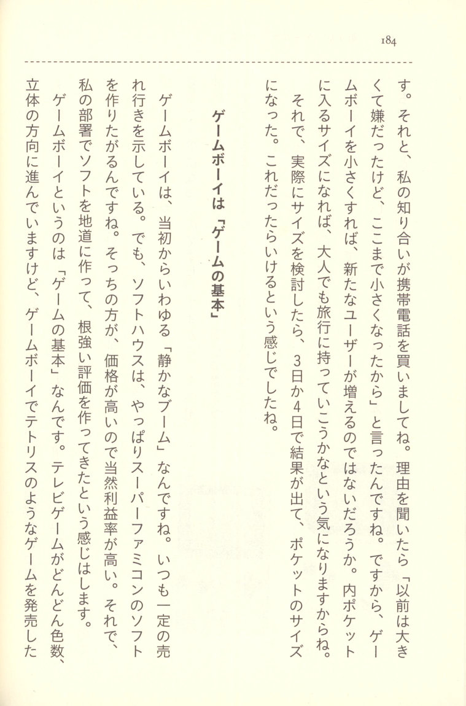
The Game Boy Is "the Basics of Gaming"
The Game Boy, from the very beginning, rode what you might call a "quiet boom." It always sold at a steady pace. Software houses, though, went with Super Famicom software — because the profit margins were naturally higher given the high prices. So they made software for that, and the software houses built up a solid reputation for it. But on our side, we steadily developed software, working earnestly away at it, and the Game Boy itself has earned strong reviews. The Game Boy, I believe, advances in the direction of three-dimensionality in games — but the Game Boy is "the basics of gaming," you see. Games like Tetris — publishing games with television-style gameplay that keep releasing new colors and features in endless
 p.188 variations — I think they hold more than enough potential to boom all over again.
p.188 variations — I think they hold more than enough potential to boom all over again.
[IMAGE: Photograph of the Game Boy Pocket retail box packaging]
Game Boy Pocket packaging
 p.189 [IMAGE: A page from Gunpei Yokoi's doodle sketchbook, showing four sequential stick-figure drawings depicting a person firing a rifle on a tripod, with the target reacting in stages — first startled, then hit, then knocked over, and finally sprawled on the ground with impact lines]
p.189 [IMAGE: A page from Gunpei Yokoi's doodle sketchbook, showing four sequential stick-figure drawings depicting a person firing a rifle on a tripod, with the target reacting in stages — first startled, then hit, then knocked over, and finally sprawled on the ground with impact lines]
From Gunpei Yokoi's sketchbook